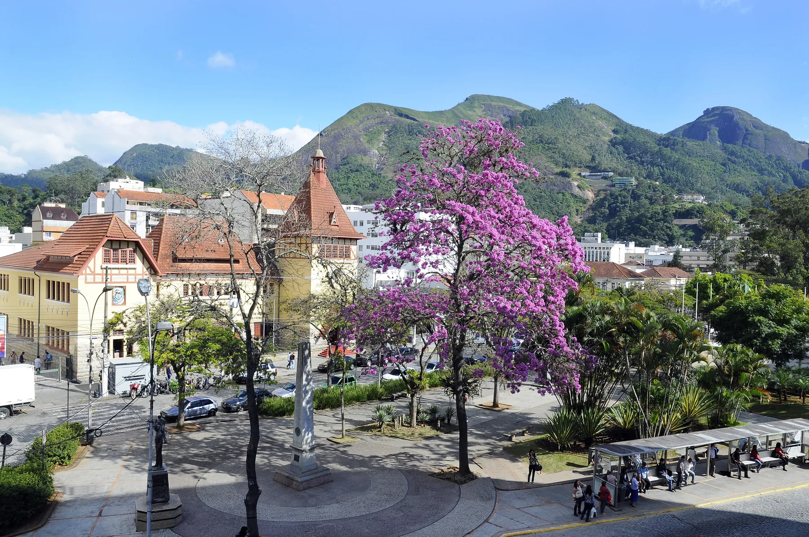
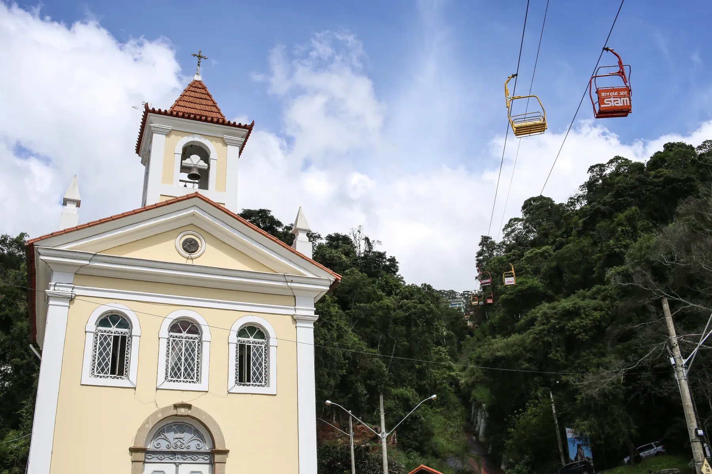
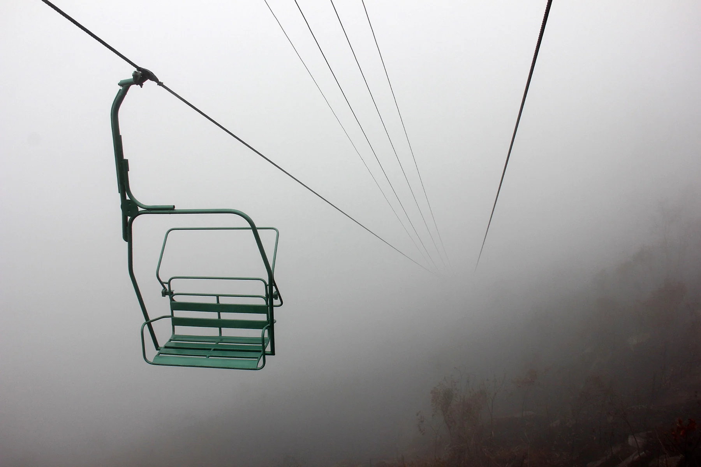

Nº 1Palco
Teatro
Do Teatro Municipal às escolas de teatro da cidade, com espetáculos para adultos e crianças.
Cultura · Nova Friburgo
Teatro, música, dança, memória e as pessoas que fazem tudo isso acontecer, do Centro aos distritos.
Em cartaz
Cada linguagem tem seu palco na cidade: nas salas, nas praças, nas escolas de arte e nas festas de rua.
Nº 1Palco
Do Teatro Municipal às escolas de teatro da cidade, com espetáculos para adultos e crianças.
Nº 2Som
Bandas centenárias, como a Euterpe Friburguense, e concertos gratuitos no inverno.
Nº 3Corpo
Balé, dança contemporânea e danças urbanas, com aulas gratuitas na Oficina Escola de Artes.
Nº 4Olhar
Exposições na Usina Cultural Energisa e cursos de desenho e pintura.
Nº 5Palavra
Lançamentos de livros, leituras e contação de histórias para todas as idades.
Nº 6Raiz
Ancestralidade, feiras de afroempreendedores, bandas e as tradições de quem formou a cidade.

Em Nova Friburgo, sempre tem alguma coisa em cena. E sempre tem um lugar para você.
Centro de Nova Friburgo · Foto: Daniel Marcus
O elenco de espaços
Passe o mouse ou role a página: o refletor ilumina um palco de cada vez.
Praça do Suspiro · Centro
O principal palco da cidade, reaberto em 2024 depois de um período de manutenção. Recebe teatro, shows, dança e cinema. O Anfiteatro do teatro também recebe apresentações.
Praça Pres. Getúlio Vargas, 55 · Centro
Teatro, exposições, oficinas e programação para a família, em parceria com a Secretaria de Cultura.
Praça Getúlio Vargas, 89 · Centro
Escola pública de artes no antigo fórum, restaurado em 2023. Cursos gratuitos de balé, canto coral, cavaquinho, dança, desenho e pintura, flauta, teatro, teclado, violão e violino.
Praça Getúlio Vargas · Centro
No casarão de 1843 que foi residência urbana do Barão de Nova Friburgo. Abriga a Sala Luzes de África, dedicada à história e à cultura da população negra.
Duas Pedras
Restaurado e aberto em 2026 como Casa de Cultura e Cidadania, com oficinas de várias linguagens artísticas.
Alto
Abriga uma unidade de atendimento da Secretaria Municipal de Cultura.

Agenda do ano
Os encontros que voltam todo ano. Entre eles, a programação dos teatros e espaços segue o ano inteiro.
Datas e programação de 2027 a confirmar. Acompanhe o site da Prefeitura e os canais da Secretaria Municipal de Cultura.
Para quem faz cultura
Artistas, coletivos, produtores e espaços culturais encontram aqui os caminhos para inscrever projetos, estudar e participar da política cultural da cidade.
Plataforma
A plataforma de editais da Secretaria Municipal de Cultura: cadastro, inscrição e acompanhamento dos projetos.
Fomento
A Chamada Pública nº 03/2026 abriu a 2ª edição do Edital de Fomento Multilinguagens.
Política nacional
Recursos da Política Nacional Aldir Blanc, definidos depois de escutas territoriais e audiência pública.
Formação
Cursos gratuitos para crianças, jovens e adultos. Fique atento à abertura das matrículas.

Memória
A cultura de Nova Friburgo vem de suíços, alemães, italianos, libaneses, de povos indígenas e da população negra que ajudou a construir a cidade. A memória também está em cena.

A cortina está aberta
Teleférico da Praça do Suspiro · Foto: Daniel Marcus